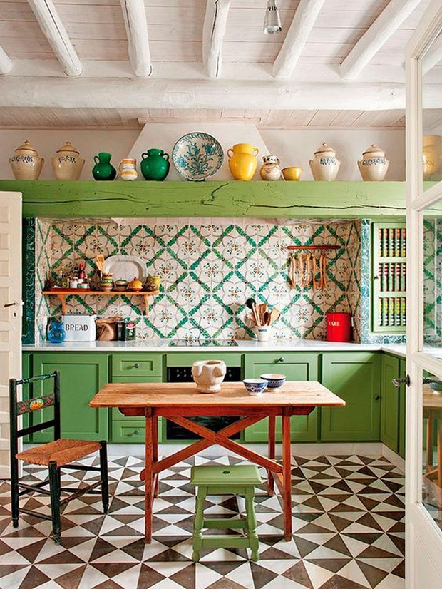
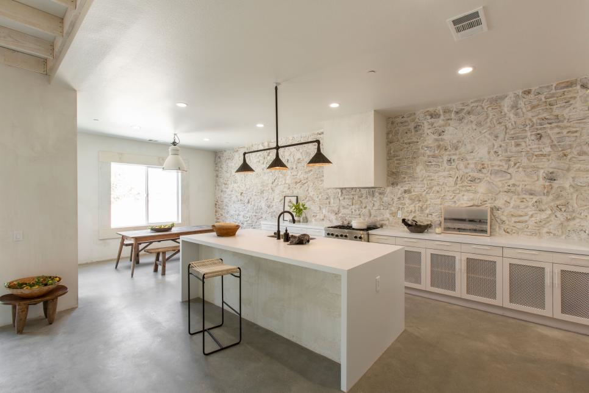

A cozinha tem um significado de local onde preparamos a comida, ou seja um local importante para o vida cotidiana. E aqui você verá ideias de cozinhas decoradas.
Em primeiro instância temos uma cozinha com uma arquitetura moderna projetadada por uma empresa denomindada timmaia, com varios tons de cinza. E logo após há uma cozinha com um toque mais rústica. 
Na imagem três há um cozinha com um estilo mais vintage, e do lados observamos um designer minimalista feito pela Leanne Ford.